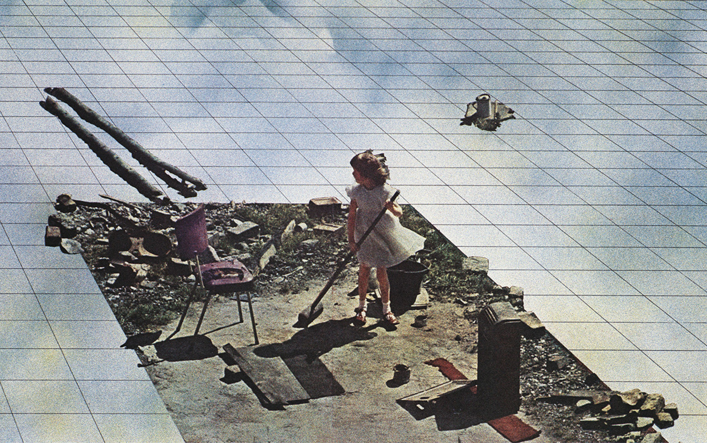
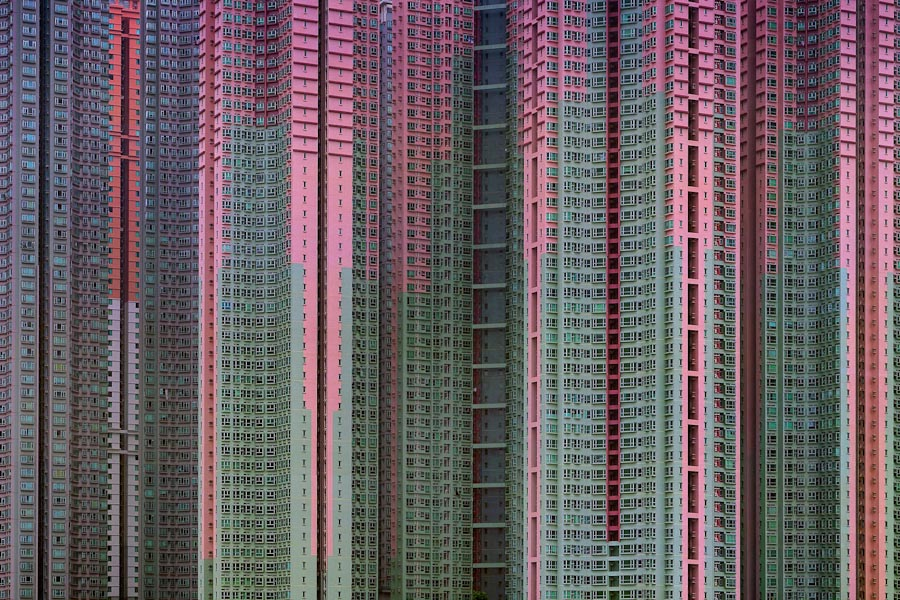

Sketches
Reference Lensvelt - Boring Collection
Sketch K O N T A I N #1
Sketch K O N T A I N #3
Sketch unexpected world - backwards
Sketch same function - different outcome

Sketch double function, stored cup as decoration
Sketch double function, stored cup as decoration
References

CODEX SERAPHINIANUS
in the late 70s italian architect, illustrator and industrial designer luigi serafini made a book, an encyclopedia of unknown, parallel world. it’s about 360-380 pages. it is written in an unknown language, using an unknown alphabet.
Slides Dog & Pony presentation
ARTICLE
Stefan Heidenreich - Freeportism as Style and Ideology: Post-Internet and Speculative Realism, Part I
"The Geneva Freeport can hold up to one million artworks. Recently its facilities had to be expanded due to increasing demand. The artworks end up in wooden transport boxes, stacked in rows on shelves in huge halls, where they sit and wait for their price to rise or fall, or to be shipped to an auction or to another freeport. The air temperature measures 21 degree Celsius, with exactly 55 percent humidity.1 These are considered ideal conditions for the survival of artworks."
REVITAL COHEN & TUUR VAN BALEN
A product is designed to be made in China, its only function is to choreograph a dance of its own assembly.
FOOD FACILITY
Based on digital search engines, the Food Facility was symptomatic of the change in analogue thinking and acting after the emergence of internet. Everyone had the chance to meet the FOOD HOST, the FOOD ADVISER, and the FOOD DJ and order their take away with a twist.
GIUDITTA VENDRAME
"I undertook a journey to the high seas, defined by UNCLOS (United Nation Convention on the Law of the Sea) as a portion of sea where no State can claim sovereignty. I intend the high seas as a zero degree space, where it is possible to re-imagine the relations between state, individual and territory, and therefore citizenship status. The purpose of this symbolic trip is the collection of fifty liters of international water, which I will transport to different geographical and juridical areas, suggesting the presence of a temporary exception zone, like an embassy without nationality."
photo by Paolo Patelli

How to make a standardized object (shoe in this case) in to an one of a kind object? Or, how to give the 'customer' the feeling the object is made for him/her only although it's standardized.
The potential of a box : DIY 3D printers.
As long the content fits in the limitations of the given measurements (the CoolBlue box) the content can be anything.

"When Apple revealed its newest line of MacBook Pros, featuring an utter lack of the beloved ports so many users have grown dependent on, it was immediately clear that dongles were going to become a problem. A company called Hyper sought to capitalize on the notebooks’ perceived shortcoming and launched an accessory that completely eliminates the need for separate adapters."(reference)


TOKYO COMPRESSION by Michael Wolf
Subway travellers in rush hour
Photo by BAS VAN WIERINGEN

pressing cars into blocks - reducing the 'empty' space. economizing space

Artist WALEAD BESHTY Shipped Glass Boxes Inside FedEx Boxes to Produce Shattered Sculptures
Cat wants to sit in the cardboard box - no matter the size of the box.
GEORGES PEREC
Poging tot uitputtende beschrijving van een plek in Parijs
‘Mijn bedoeling op de volgende pagina’s was vooral al het andere te beschrijven: dat wat je gewoonlijk niet opmerkt, wat er niet toe doet: wat er gebeurt wanneer er niets gebeurt, behalve tijd, mensen, auto’s en wolken.’

Drilling equipment creates burial spots in the walls of underground cemetery under construction in Jerusalem. // Systemizing the death.
SUPERSTUDIO
Superstudio was the name of an architectural movement formed by a group of university students in Italy in the late 60’s that immersed themselves in utopian and democratic ideals and expressed them through film, photomontage and striking visual imagery.

 Organising a group of individuals to pretend
Organising a group of individuals to pretend


Forcing geometry on nature
ARCHITECTURE OF DENSITY by Michael Wolf

Design v.s. Experience
IKEA ROUTING

PRIORITY LANE Priority Lane is an exhibition space initiated by Max Bouwhuis and Lin Ven. The general aim is to create a stage to investigate how the artistic approach is influenced by the urge to prioritise. The size of the exhibition space is 32 x 42 x 25 cm which is based on the maximum size of free cabin luggage allowed on a Wizz Air flight. A process of choosing, selecting, deleting and refining is obligatory. What will remain of the artistic concept when stripped off, essentialised, or minimised – thus prioritised?


Breathing = natural process. Breathing machine takes over the natural process. mimicing nature with an artifical machine.
1 FEB 2018
Organic movement based on precise organisation.

1 FEB 2018
22 people running behind a ball. It looks unorganised, even bestial sometimes. But the whole game is based on systems and tactics.

My own notes (2010)

31 JAN 2018
MARIA BIGAJ
Using organic materials like fruit and vegetables, Polish artist Maria Bigaj (b. 1991) makes poetic sculptures in which she explores the natural process of transformation and decay. She also manages to create some confusion by playing with the properties of the material and giving it a new twist. Thus, a melon or pumpkin appears to be a stable connecting element, while steel bent into geometric shapes seems fragile. But what happens after a time? Bigaj subtly subverts our assumptions, playing with the unexpected results of decay, prompting us to look more closely.


30 JAN 2018
THE (EXTRA) ORDINARY ENCYCLOPEDIA by Suzanne Bakkum
process // images // references // archive //
Notes
NOTES 30 APRIL 2018
Routines - /ruːˈtiːn/
1. a sequence of actions regularly followed.
2. commonplace tasks, chores, or duties as must be done regularly or at specified intervals; typical or everyday activity.
What routines do I have in my daily life? Why do I have routines and what routines do other people have? What are general routines and what are the personal routines?
Domestic routines are recognisable for most people. Dreaming away while doing your dishes, making a to-do list during vacuum cleaning your room, setting your alarm before going to bed.
I want to surprise the visitor with unexpected twisted to everyday, domestic objects.
Your alarmclock your daily mantra to wake you up, your vacuumcleaner having a universe inside itself, your lamp holding
I want to integrate nice, relaxing, utopian escapes in the daily domestic routines.
CONCEPT 6 APRIL 2018
“Kontain is a collective of non-profit
exhibition spaces founded in April 2018.
The aim is to explore the relation between
the container and its content.
How to reveal unexpected potential of
standardized spaces?”
I will create a series of physicial spaces
(around 5). The shape of these spaces
will be based on daily life objects. I’ll invite
a selection of artists, photographers
and designers to create a work for
a specific given space. They will be asked
to work with the theme of the unexpected
potential of this standardized space.
I will promote the exhibition spaces
as a collective called KONTAIN.
This promotion will include online
promotion, a website, posters, and
an exhibition catalogue.
TEXT DOG & PONY SHOW 6 MARCH 2018
1. ORGANISATION
I am fascinated by the way we organize our world.
We create all kinds of frameworks.
A perfect example is this Dog & Pony show. 35 graduates are asked to pitch their proposal within 200 seconds. We have the beamer [ ] and this microphone
to convey our message to an audience. All sitting in an organized auditorium.
It’s a very restricted framework to create an efficient way of handling 35 individual presentation within a specific timeframe of one day.
The Dog & Pony framework has as goal to be efficient. Other reasons to organize our world are for example:
- gain control
- protect ourselves from uncomfortable situations
- save time and money
- create safety
Organizing things is a way of fixating an always moving world. Those ways of organizing ourselves comes with certain expectation patterns.
2. EXPECTATIONS
Expectations are strong beliefs that something will happen or be the case. They come in all form and sizes.
It can be our everyday expectation of the sun to rise, but it can also be the expectation of our pizza to be ready in 12 minutes.
The more we fixate ourselves within structures and systems, the more we fixate on the expected results of certain actions.
3. PROBLEM
even though we try very hard to organise ourselves in understandable systems - life is inconsistent. Now and then, some more than others, we are confronted with unexpected situations. Also these situations come in all shapes and sizes. For instance, your app says the bus arrives at twelve - it doesn’t. How do we handle these UNexpectations? Do we get irritated or do we directly anticipate and find an other bus to bring us were we want to be?
Over-organizing won’t eliminate all unexpected situations and can lead to unlearning to coop with these situations. In other words, we unlearn to anticipate. and this is problematic.
4. RESEARCH QUESTIONS
Therefore my questions are:
How does behavioral conditioning influence our ability to anticipate in unexpected situations?
How can I as a designer confront people with their routines and create space for the fun of unexpectations?
5. POSITION
I think an increase of awareness of our fixations and assumptions is important.
We have the tendency to fixate ourselves in made frameworks to decrease the amount of uncomfortable situations. But there is a certain beauty in these uncomfortable situations. It gives space to play and surprise yourself, instead of getting irritated or angry.
By seeing the reality of inconsistency you don’t loose yourself in anxiety or hope.
6. GOAL
As designers we have the responsibility to take in account the user experience of our designs. I want to shake up the relation between form and expectations. By creating minimal interventions in everyday systems, I want to confront my audience in a humorous way with their own automatic pilot.
I want to do this in order to
1. create awareness of the limitations given by certain expectation patterns
2. stress the importance of the ability to anticipate
I want to create an ode to the unexpected.
NOTES 15 FEB 2018
CONTAINER & CONTENT
How do these two relate? What happens when content wants to fit in a container while it's too big? The dimensions of the container define the dimensions of the content. Everything is placed within a container. Not only physically, also conceptually. We live in a huge matryoshka: The body is our container (presuming 'me' is not just my body), our body is sitting in a room, which is part of a house, a building, a street, a city, a province, a country, etc. Being in a container is unavoidable. But when and why does the content become aware of the container? Simple, When you start bumping your head against the ceiling or you only juuuust fit in. When something easily fit in the given container, it doesn't have to be aware of it's existing. But when you only just fit or just not fit, you get confronted with it. And what happens when the container doesn't supply the space needed for the content?
- 1. The content is anyways squeezed into the container.
- 2. Parts of the content are left outside the container.
- 3. The content is adjusted to fit in the container. ( think of ikea furniture )
- 4. Hacking the container: the container is adjusted in a way the content anyways fit in it's original size.
when does this matryoshka system starts working against you?
NOTES 15 FEB 2018 - DOG & PONY SHOW
- What spaces are given?
- 1. Auditorium
- 2. Laptop
- 3. Beamed presentation
- dimensions projection = ??
- aspect ratio presentation = 16:10
- 3. 10 Slides
- 20 seconds per slide
- What are their limitations?
- What is their potential?

NOTES 12 FEB 2018
- - PIVOT POINT (kantelpunt*) of staying within set limitations or breaking the giving limitations.
- - 'GEDOOGBELEID'
Which set of dimensions are regularly broken without consequences? - 1. Boot volume of a car
- 2. Timeslots of individual talks with teachers
- 3.
NOTES 8 FEB 2018
- - STANDARDIZATION of space
- - volume / limitation
- The use of the words 'standardization' and 'standardisation' from 1800 till 2008 found in books on Google Books
- "The spirit of the Roaring Twenties was marked by a general feeling of novelty associated with modernity and a break with traditions. Everything seemed to be feasible through modern technology. New technologies, especially automobiles, moving pictures, and radio, brought "modernity" to a large part of the population." (reference)
NOTES 2 FEB 2018
- POTENTIAL of space
- volume / limitation

NOTES 1 FEB 2018
- things as they are planned v.s. Things that happen to be
- traces of the grid
- What happens when I apply my metaphoric visuals to real situations?
- could it become characters? [reference: The Magnetic North]
- design v.s. user experience
NOTES 30 JAN 2018
- forcing a grid on organic matter
- breaking the grid
- personilising defined spaces (interior of your living space)
- creating space within set restrictions
- appropriating space
- dynamics between organic shapes/primal behavior and the constructed
- proposing to experience a given space in a different way
30 JAN 2018

30 JAN 2018
What happens when you force a grid on organic matter? What if the matter doesn't want (or isn't able) to function within the grid?